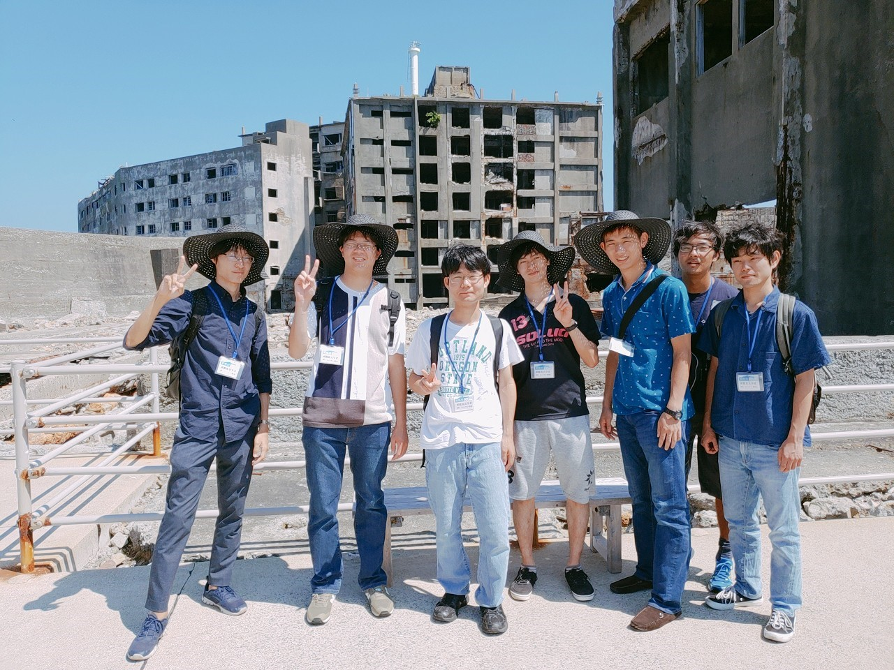

卑猥旅行記（長崎編）
～これで君も長崎県民だ！！～
長崎に行くのに何の予備知識もなしに行ってしまうなんて愚か者！ 何にもできずにこっちに帰ってくることになるぞ童貞！ というわけで長崎県についていろいろと紹介していきたいと思いま～す。
食べ物編
さあ長崎の食べ物といえばまずこれが出てくるでしょう 長崎ちゃんポーン まあこれはう説明するまでもないでしょう。というわけで私が珍しい食べ物を探してきました。それがこちら！ 蚕のさなぎの甘露煮！実際に好評らしいです。ぜひ家で作って食べて見てください、 私は食べておいしいと感じました。
こちらが実際の映像になりますさあまっつーそんな暇そうな顔してみないで ちゃんと用意してきてあるから
mattu-編
さあというわけでまっつーにも楽しんでもらえるように頑張って調べてきましたよ～…こちら！
長崎県有数のderiheru、！！
俺なら1日10発かな～やっぱり 6時間半端ないって！！さあどうでしたでしょうか。 これをよんであなたはもう立派な長崎県民！ 長崎にはかわいい子がいっぱいいるという噂なのでこの記事を使ってナンパをするもいいかもしれません。
出発編
さあ私たちは、大学のしょーもないメンバーで長崎にいってきました。 1日目はハウステンボス。 2日目は軍艦島、原爆資料館、あと夜景を見に行きました。 下の写真は軍艦島に行った時の写真です。 